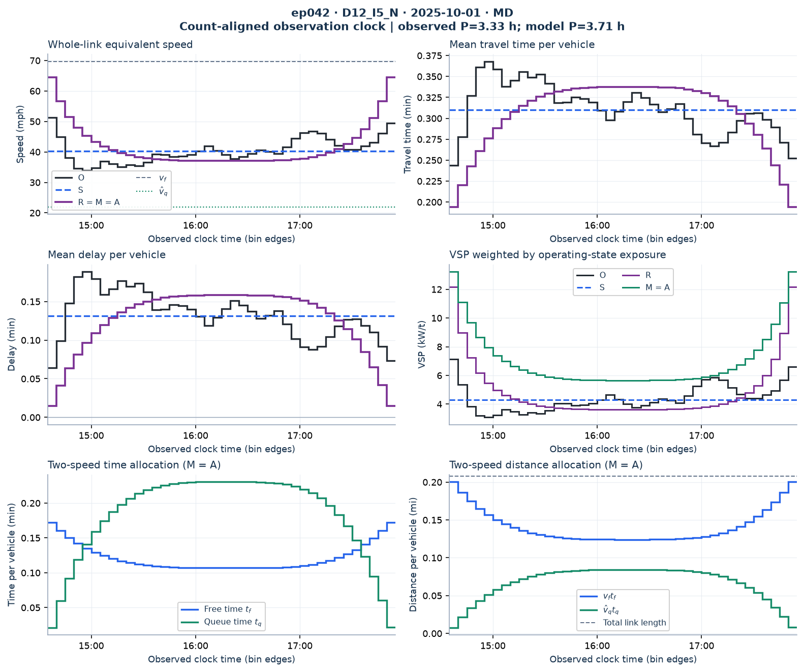
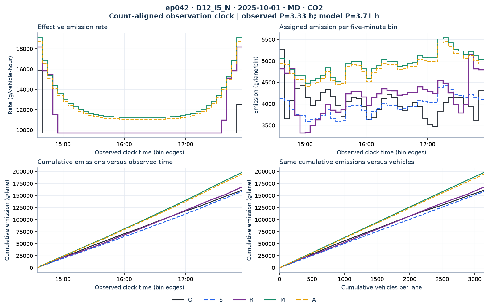
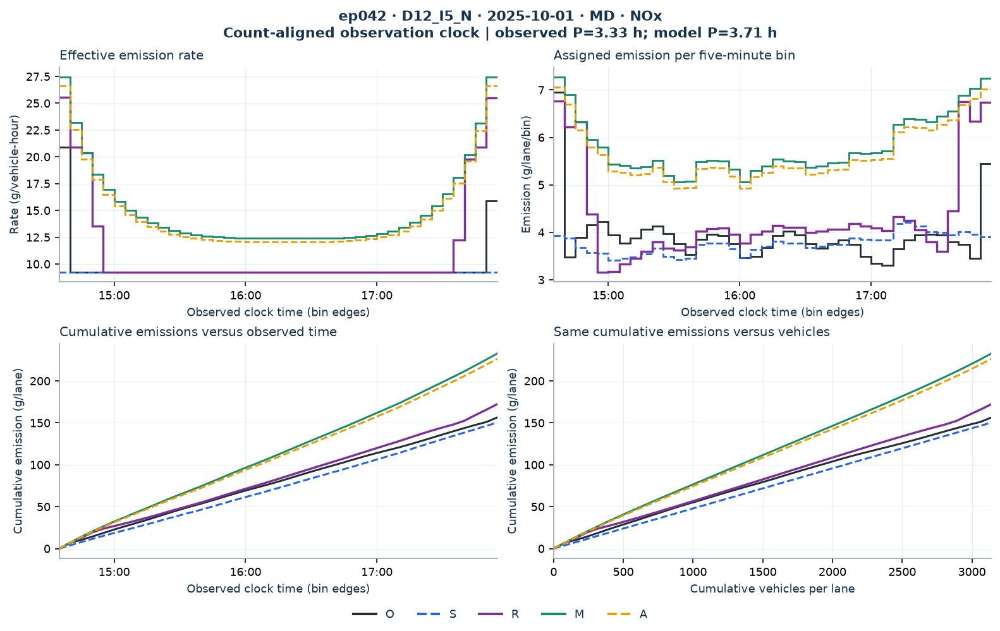
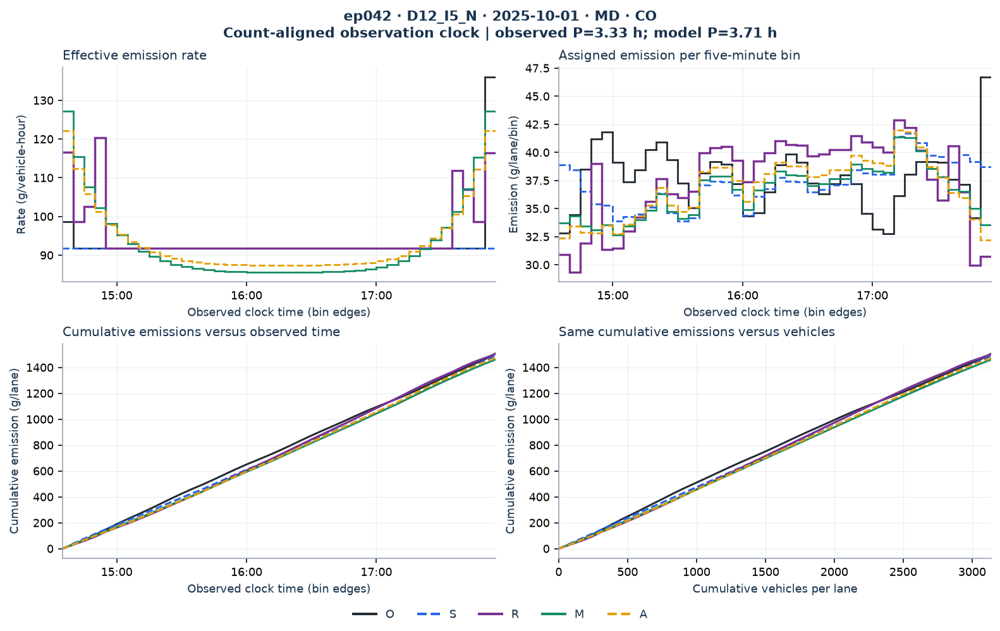
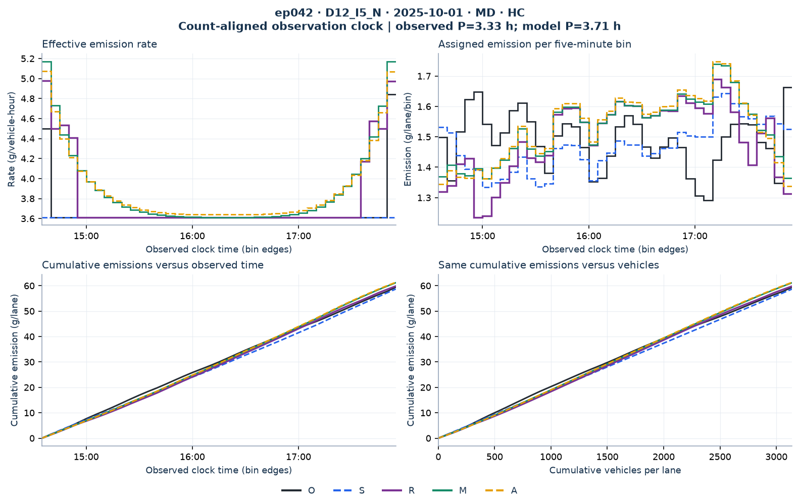

state_transition__PeMS::D12_I5_N::L5N-138__2025-10-01__092
Common-clock diagnostic: model vehicle groups are assigned to recorded five-minute bins by cumulative-count overlap. The fitted duration may differ from the observed duration. These are comparisons with the observed-speed calculation O, not measured vehicle trajectories. Counts, vehicle-hours and emissions are per lane.
| Observed duration | Fitted duration | Volume | Length |
|---|---|---|---|
| 3.333 h | 3.709 h | 3140.0 veh/lane | 0.208 mi |
O: recorded-speed lookup reference · S: single observed average speed · R: reconstructed speed + lookup · M: two speeds + lookup · A: two speeds + cubic rates.




